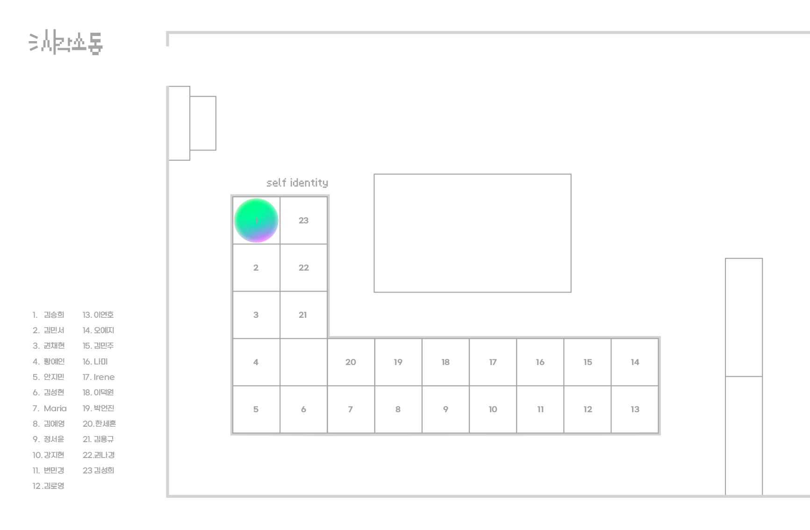

SHAPE POSTER
VD1
Center of Circle
자석과 철가루의 관계를 통해 원의 중심이 가지는 힘을 표현하였다.
자석을 통해 다양한 방향성을 갖는 철가루는 거리가 가까워지면 붙고, 멀어지면 떨어지는 사람과 사람간의 관계와 비유해 볼 수 있다. 자석을
‘나’라고 생각하고 흩뿌려진 철가루 위에서 이리저리 움직여보며 철가루의 움직임을 바라볼 수 있다.
MINIMALISM POSTER
VD1
Cactus Hotel
스스로 정의 내린 미니멀리즘 대한 내용을 바탕으로 디자인 규칙을 세워 ‘사와로 선인장’을 주제로 한 포스터를 제작하였다.
MAXIMALISM POSTER
VD1
Cactus Hotel
스스로 정의 내린 맥시멀리즘에 대한 내용을 바탕으로 디자인 규칙을 세워 ‘사와로 선인장’을 주제로 한 포스터를 제작하였다.
GENRATIVE SYSTEME
VD1
Thorn
선인장을 소재로 제너러티브 시스템을 구축하여 디자인을 전개하였다. 선인장을 대표하는 요소인 가시를 핵심 키워드로 선정하였고, 가시의 형태나 성질과 유사한 다양한 생물, 또는 사물 등을 찾아 가짜 선인장의 이미지를 제작하였다.
5 PATTERN POSTERS
VD2
Balloon
풍선을 모티브로 하여 풍선에 비유한 나의 5가지 성격 혹은 가치관을 시각화하여 패턴 포스터를 제작했다.
EXHIBITION IDENTITY
VD2
AB시디: 차곡차곡 쌓인 레고를 모티브로 메인 그래픽을 제작하였다.
#000000: 모든 색의 조합이라는 검정색의 특징을 괄호와 결합하여 메인 그래픽을 제작하였다.
SELF IDENTITY
VD2
이 위치로 직접 가서 확인해보세요!
